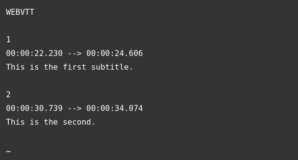

Lets explain the attributes in <video> tag. src is same as it is in <img> tag, it points to the
multimedia source. controls attribute is to provide controls such as play, pause, adjusting
volume to the user. Paragraph inside the <video> element is fallback content to show
info in this case a link to the video in case browser doesn't support HTML video element.
<source> element can be used to provide various container formats or codecs for
compatibility inside video element by removing src attributes. In this case browser will
go through the source elements and play the first one that has the codec support.
Text tracks are useful for example if language of the audio is not known by the user,
playing audio is not allowed or in case of impairments. WebVTT file format and <track>
element can be used to add text tracks.
WebVTT is a format for writing text files along with metadata such as time in the video
at which each text should be displayed. These text strings are called cues and there are
several kinds of cues:
An example WEBVTT file is as below:

WEBVTT file should be linked in audio/video element with track element after source elements.